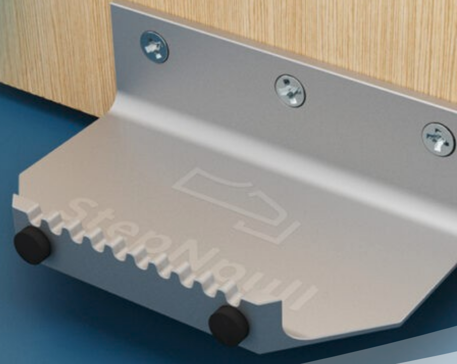
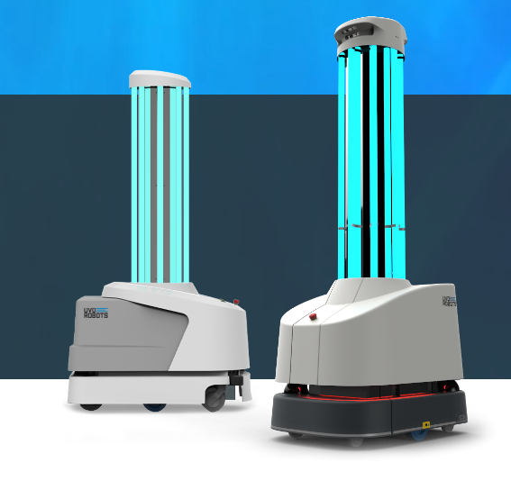

DR.PHIL is a autonomous robot designed to sanitise points of contact in buildings. It will be able to automatically navigate through rooms on a schedule or manually, and spray disinfectant on high priority contact points.
Our key markets would be for hospitals, businesses or even homes with large floorplans that want more a sanitary environment.
With Dr.Phil, we hope to increase the efficiency of janitors and at the same time reduce their risk of contacting possible contaminants. It will help create a safe environment where employees, customers or patients won't need to worry about their health being compromised.
Some use cases include:
As an office manager I want to schedule a sanitisation run every hour to reduce the number of cleaning shifts and save money.
As a cleaner I want to be able to come to work when there is real work to be done so I don't have to sit idle until my shift is over. I also want to minimise physical contact with surfaces that are touched by many people.
As an employee in a busy office I want to be able to work in the midst of a pandemic knowing there is little risk of infection if i touch things I need to use over the course of a day
Dr.Phil is built on a turtlebot, which allows it to move around and has a LIDAR sensor for automatic mapping of it's environment. It can move around a floor by itself without manual intervention, opening doors via a robotic arm. Dr.Phil is quick to setup and moveable as a result.
It detects and then disinfects door handles using an easily refillable spray, minimising physical contact. Dr. Phil can be controlled via an easy-to-use app, where one can set cleaning schedules as well as take manual control from anywhere. The app also shows Lifetime statistics and detailed current information.
For safety, an emergency halt procedure has been implemented which allows the robot to quickly return to it's station. The app also allows the user to immediately stop the robot wirelessly. An LED strip has also been installed which clearly shows it's current state of operation to nearby people.
Whilst sanitation is of course important during the pandemic, disinfecting robots will still be in demand afterwards. One report estimates a annual growth rate of 36% for the disinfectant robot market between 2020-2025, from $341.3 million USD to $2325.4 million USD.
We've also asked participants in our user study whether they'd be comfortable with having an autonomous robot in the workplace. 5/7 said yes, and 7/7 responded yes if safety features (such as emergency halting) were implemented. However, as the particpants were from another SDP group (and also working on a robot), these results are not representative of society as a whole, although it demonstrates a need for a robust set of safety features.
There are a number of products, both robotic and more generic, which aim to tackle the problem of unsafe contact surfaces.
A simpler solution is given by StepNPull, a "device which allows you to open a door hands free by using your foot or even a walking stick, avoiding any contact with door handles or surfaces."
These have the benefit of being cheaper (at only £33 per handle) and easier to install/maintain. However, they're not easily moveable and can't sanitise anything other than doors. Dr.Phil would be easily transportable to different buildings and in extensions support cleaning different types of contact points.
A more comparable solution would be the Ultraviolet(UV) roller robots, such as those by UVD robots.
UV is an excellent method of killing micro-organisms, however UV is also dangerous to humans as a result, meaning it can't be used in occupied rooms. Dr. Phil will use a disinfectant which kills pathogens whilst not affecting humans, allowing it to be used under these scenarios (e.g. in hospital wards.) Furthermore , Dr.Phil will traverse through rooms with closed doors, which UV robots can't do as they don't have arms.
In relation to janitors, they themselves are possible transmission vectors, have limited working hours, and cost on average £20000 per year according to glassdoor. Our product is an opportunity for companies to add automation to their sanitisation protocols. As a result, this will cut costs and the disinfectant routines would be more efficient.
We found a number of potential improvements to Dr. Phil, mostly revolving around sanitising more places and more things.
Accessing different floors via elevator: Dr.Phil currently can only navigate one floor. Using vision, Dr.Phil can locate lifts and use them to traverse floors safely. This would mean a single robot could potentially be responsible for multiple floors/small multi-storey buildings. This would require a similar development process to door opening ; locating the lift/panels , pressing the buttons, going in and out. The arm would also need to be modified so it can press the floor buttons accurately.
Sanitising more kinds of door handles/contact points: Dr.Phil currently can only disinfect lever door handles. By training more types of handles/contact points, Dr.Phil will be able to recognise these in buildings and disinfect those as well, increasing it's productivity. This will require more AI as well as improved grippers for navigating different types of doors (perhaps as an extension.)
Monitoring social distancing guidelines:By detecting the number of people and their proximity to each other, as well as whether they were wearing masks or not, Dr.Phil will be able to help people adhere to social distancing guidelines. This can be done by extending it's vision capabilities to recognise masks and calculate distances between people. The data stored will have to be carefully handled to account for privacy concerns.